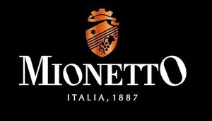

Trade Mark Journal No.2026/010 6 March 2026
WO0000001902898 (32,33)
Office of origin: European Union Intellectual Property Office (EUIPO)
Date of International Registration:26 December 2025
Date of designation in the UK:
26 December 2025

The mark contains the colours white, black and orange.
- Class 32
- Aperitifs, non-alcoholic; cocktails, non-alcoholic; soft drinks; non-alcoholic beverages containing fruit juices; alcohol free wine; alcohol free wine; non-carbonated soft drinks; non-alcoholic bitters; cocktails, non-alcoholic; non-alcoholic punch; non-alcoholic preparations for making beverages; waters; energy drinks; flavoured carbonated beverages; non-alcoholic cocktail bases; juices; fruit-based beverages; fruit drinks; must; fruit nectars, non-alcoholic; grape juice; beer; beer-based beverages; non-alcoholic beer; orgeat; syrups for beverages; orange juice; lemon squash.
- Class 33
- Wine; aperitifs; alcoholic aperitif bitters; wine-based aperitifs; sparkling wines; sweet wines; dessert wines; wine; white wine; red wine; rose wines; sparkling white wines; sparkling red wines; sparkling fruit wine; alcoholic preparations for making beverages; alcoholic beverages; liqueurs; distilled beverages; rum; whisky; aquavit; gin; vodka.
MIONETTO S.P.A.
Representative: DAVIDE PAROLIN, Via Mercato Vecchio 7, I-31044 Montebelluna (TV), ITALY